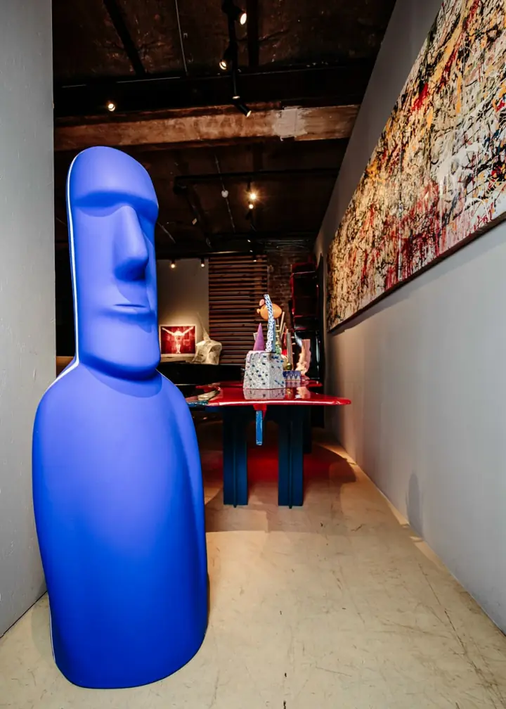
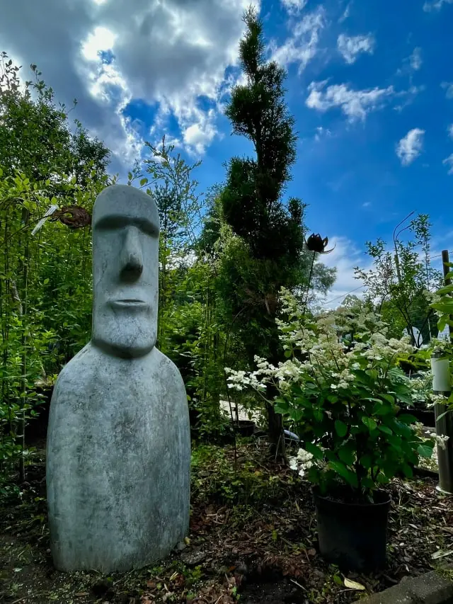
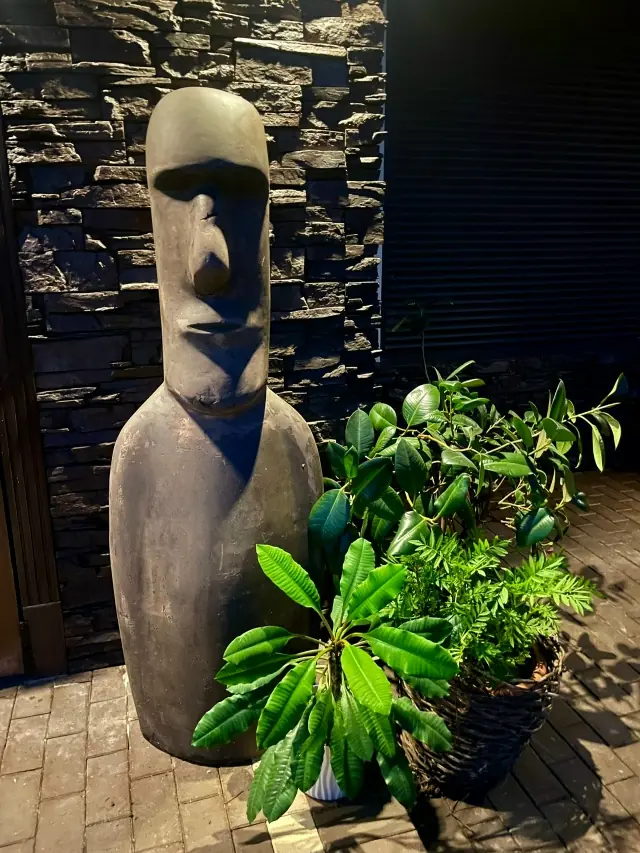
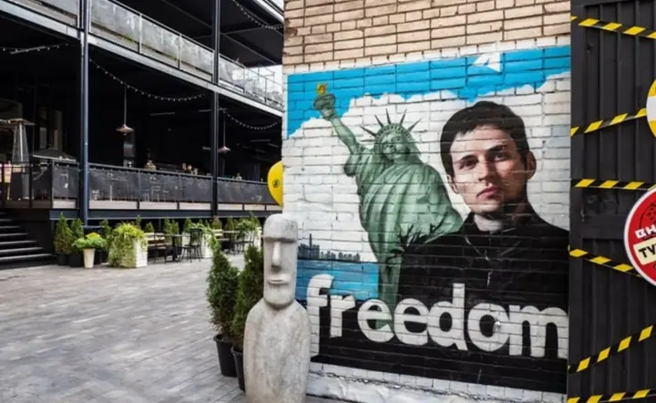
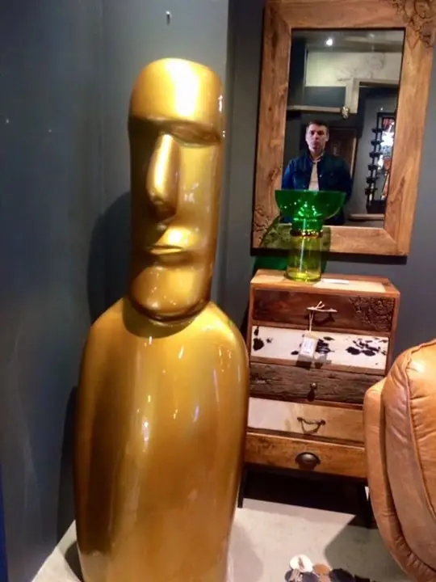
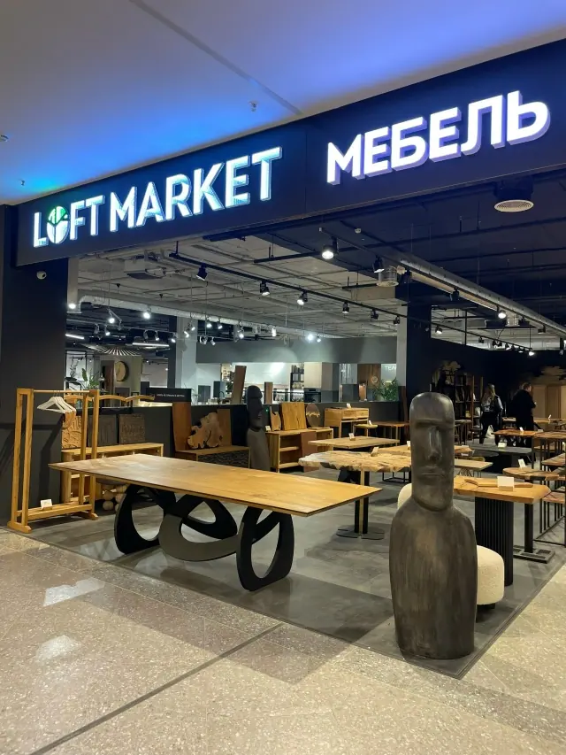

Для сада и общественных пространств
Армированный бетон
- Высота
- 155 см
- Вес
- 75–80 кг
- Материал
- Влагостойкий, морозостойкий армированный бетон
- Цвет
- Натуральный бетон или любой цвет по RAL фасадной краской
50–75 тыс. ₽
В зависимости от варианта исполненияАвторский проект Ильи Вереска
Монументальный образ острова Пасхи, перенесённый в современный сад, интерьер и городское пространство.

Идея
Илья Вереск переосмысляет узнаваемую форму моаи как самостоятельную скульптуру. Масштаб, цвет и окружение меняют характер объекта: он может быть спокойным акцентом среди растений или яркой фигурой в галерее.
Серия существует и в прикладном формате садовых кашпо. В авторской публикации объект из серии «МОАИ» показан в Михайловском саду во время фестиваля «Императорские сады России».







Форматы и стоимость
Каждая скульптура высотой 155 см. Цвет и характер поверхности подбираются под пространство.
Для сада и общественных пространств
50–75 тыс. ₽
В зависимости от варианта исполненияДля интерьера
150–200 тыс. ₽
Итоговая стоимость зависит от варианта окраскиИмператорские сады России · 2015
В каталоге VIII Международного фестиваля проект Ильи Вереска, Кирилла Овчинникова, бренда «Разгуляев-Благонравова» и куратора Надежды Юнацкой представлен в категории «Арт-объекты». Авторы построили свою историю Великого шёлкового пути вокруг 888-й статуи Моаи — символа, который начинает путешествие с острова Пасхи.
Открыть каталог фестиваляСледующая история — ваша
Расскажите об идее. Обсудим композицию, выезд, сроки и стоимость.